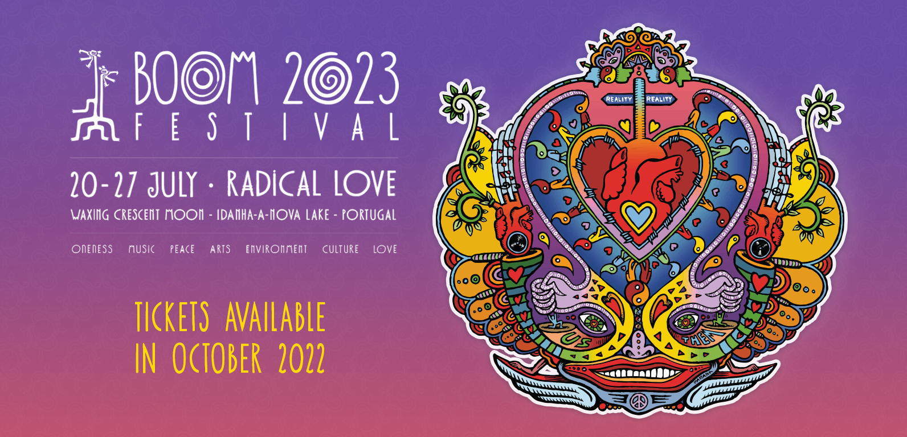
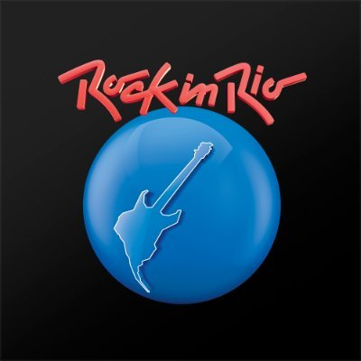

O Boom Festival é um evento totalmente independente que é orgulhosamente livre de patrocínio corporativo, financiamento estatal ou afiliações políticas.
E como conhecimento é poder, gostaríamos de aproveitar esta oportunidade para desvendar o mistério do Boom, dando resposta a alguns dos rumores que têm circulado nos últimos tempos.
Boom Festival

O Rock in Rio é um festival de música idealizado pelo empresário brasileiro Roberto Medina pela primeira vez em 1985.
É reconhecido como um dos maiores festivais musicais do planeta. Foi originalmente organizado no Rio de Janeiro, de onde vem o nome.
Tornou-se um evento de repercussão em nível mundial e teve em 2004 sua primeira edição fora do Brasil, em Lisboa, Portugal.
Rock in Rio Festival
